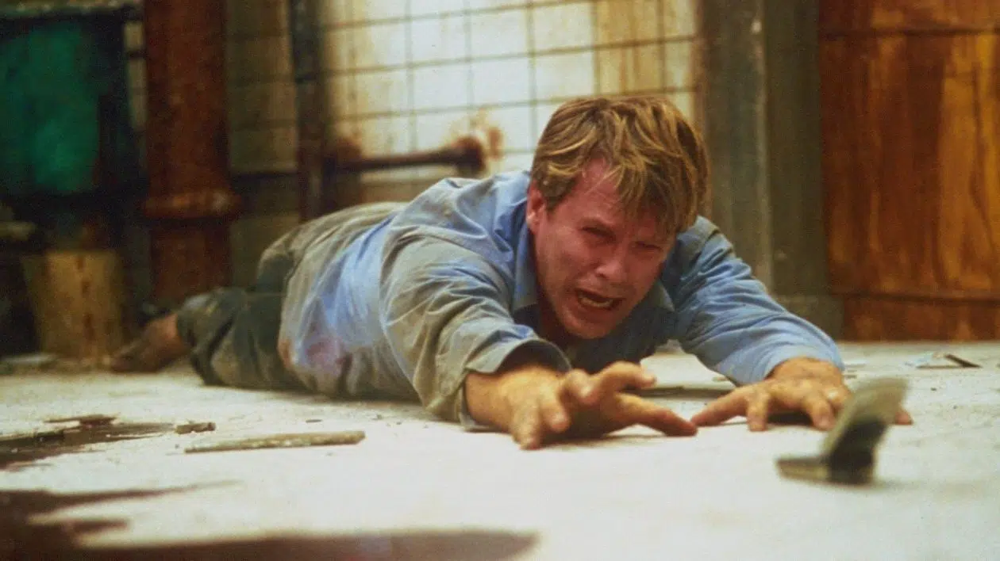

Prévu pour octobre 2025, Saw 11 a été officiellement annulé suite à de graves conflits en coulisses. Une décision qui pourrait bien mettre en péril l’avenir de la saga horrifique.
Une saga en difficulté
Depuis 2004, la franchise Saw s’est imposée comme un phénomène du cinéma d’horreur avec des suites toujours plus tordues. Malgré l’échec de Spirale : L’Héritage de Saw (2021), qui a peiné à rentabiliser son budget, le succès de Saw X en 2023 (125 millions de dollars au box-office) avait relancé l’enthousiasme des fans.
Des tensions internes explosives
Selon Bloody Disgusting, un conflit interne entre producteurs aurait causé l’arrêt du projet. Une source anonyme affirme :
« C’est complètement mort. C’est 100% terminé. Ça fait presque un an maintenant. »
Les scénaristes Patrick Melton et Marcus Dunstan avaient soumis un script au printemps 2024, mais depuis, plus aucun retour de la part des producteurs. Melton explique :
« Il y a des tensions au sein de Lionsgate. Ce n’est pas une question créative, mais un conflit de gestion. Ils n’arrivent pas à se mettre d’accord. »
Quel avenir pour la franchise Saw ?
Si cette annulation marque un coup d’arrêt, il est difficile d’imaginer que Lionsgate abandonne définitivement la franchise. Avec plus d’un milliard de dollars générés en vingt ans, Saw reste une mine d’or.
Patrick Melton laisse d’ailleurs entendre qu’une autre version de Saw 11 pourrait voir le jour :
« Nous avions une histoire forte et actuelle, qui mériterait d’exister. Elle rappelle Saw VI, avec un message puissant sur la colère et l’injustice. »
Faut-il donc s’attendre à un reboot ou à un changement d’équipe ? Une chose est sûre, John Kramer n’a peut-être pas dit son dernier mot.
➡️ À lire aussi : Marvel victime d'une fuite massive : Avengers Secret Wars, Doomsday, et bien plus encore !